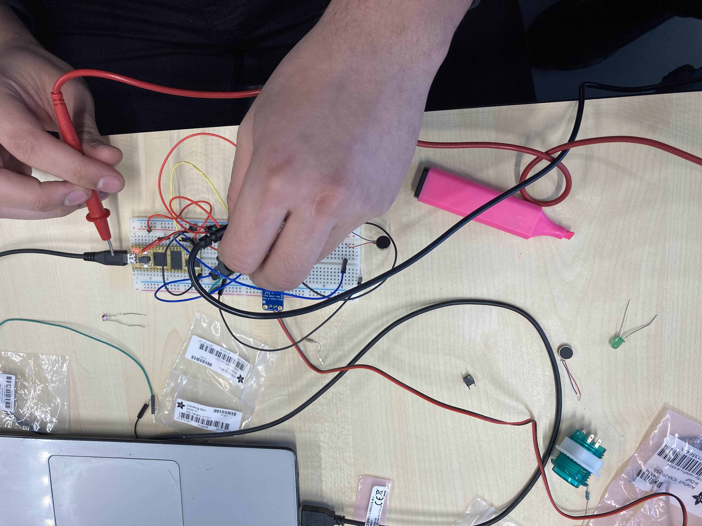
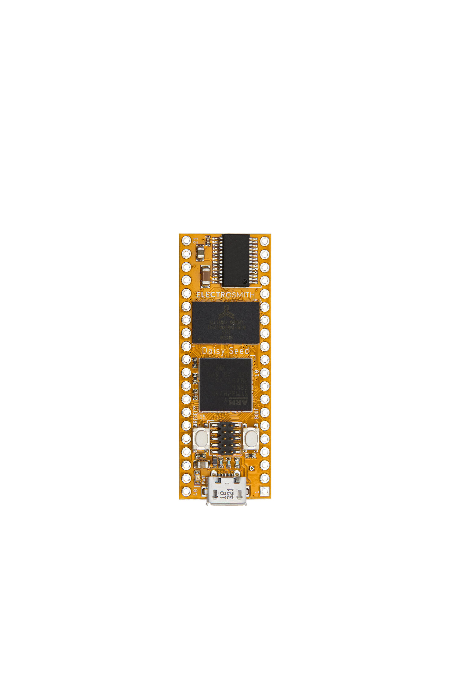
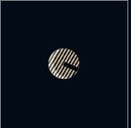
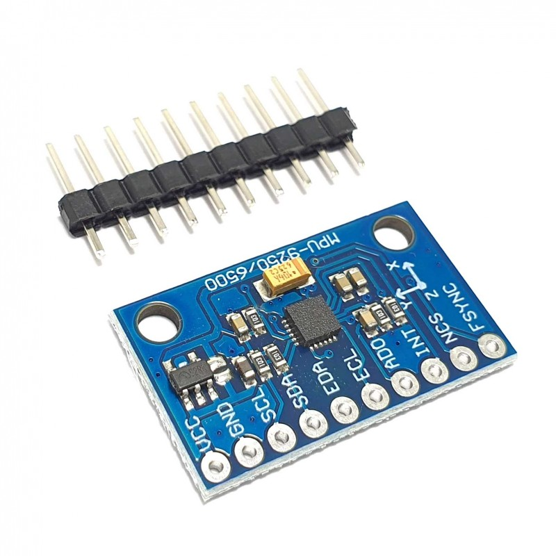

Introduction
The latest generation of the 51uG, commonly known as Slugula, maximizes Employee Output Regulation. 51uG helps to motivate and reward
workers who work hard through genetically enhanced soothing vibrations. If the 51uG finds a worker not achieving their maximum potential,
specialized motivating high frequencies are emitted to help the worker achieve their targets. (We are not liable for the deaths of any
workers in the case of a 51uG being anywhere near a deceased. Usage of the 51uG is compulsory; failure to adopt one will induce a $3000
fine. If caught in an attempt to silence the 51uG, suitable punishment will ensue for the heinous citizen).
How does it work?

The 51uG has four ways of detecting an input: LDRs, an accelerometer, a pressure sensor, and buttons. To output information to a user, the
51uG uses a piezo speaker, LEDs, and a vibration motor. Some of the input devices & all of the output devices are hidden within the slug's
silicone molded skin. The LDR and buttons, however, protrude from the skin. To bring the creature's imagined traits to life, the user
needs to pick up the slug to initiate it, and then hide the LDRs from light, whilst constantly moving the slug to keep it from emitting an
annoying screech. When "comfortable", the slug would give off a soothing sound. To silence/kill the slug, you need to squeeze the slug,
while holding both of the buttons underneath it for a set amount of time.
About the instruments
Daisy seed microcontroller

A powerful microcontroller for synthesis programmed through C++, Arduino, Pure data and Max MSP
Light sensor

A light sensor detects light in its proximity
Gyroscope/Accelerometer

A gyroscope/accelerometer is a device used for measuring or maintaining orientation and angular velocity
Velostat
Velostat is a conductive material. It's pressure-sensitive and can be used as a pressure or bend sensor. Squeezing it will reduce
the resistance.